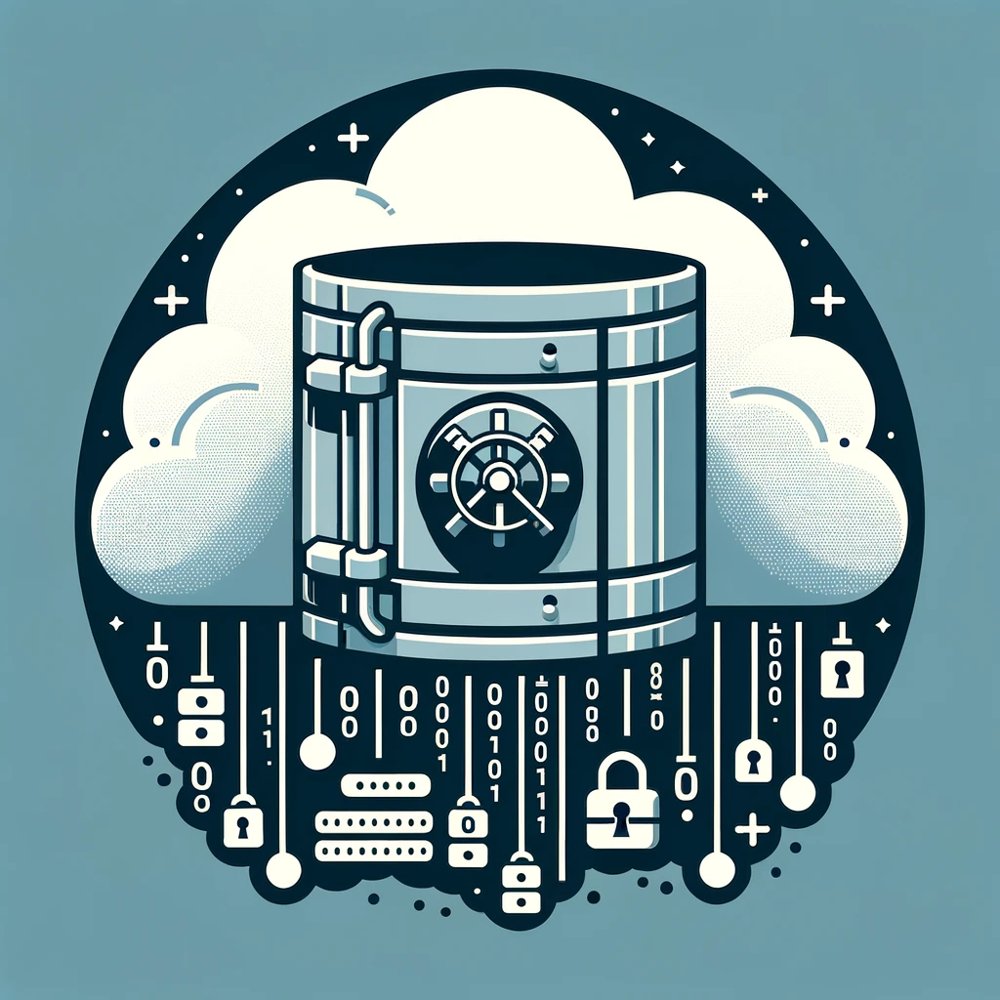
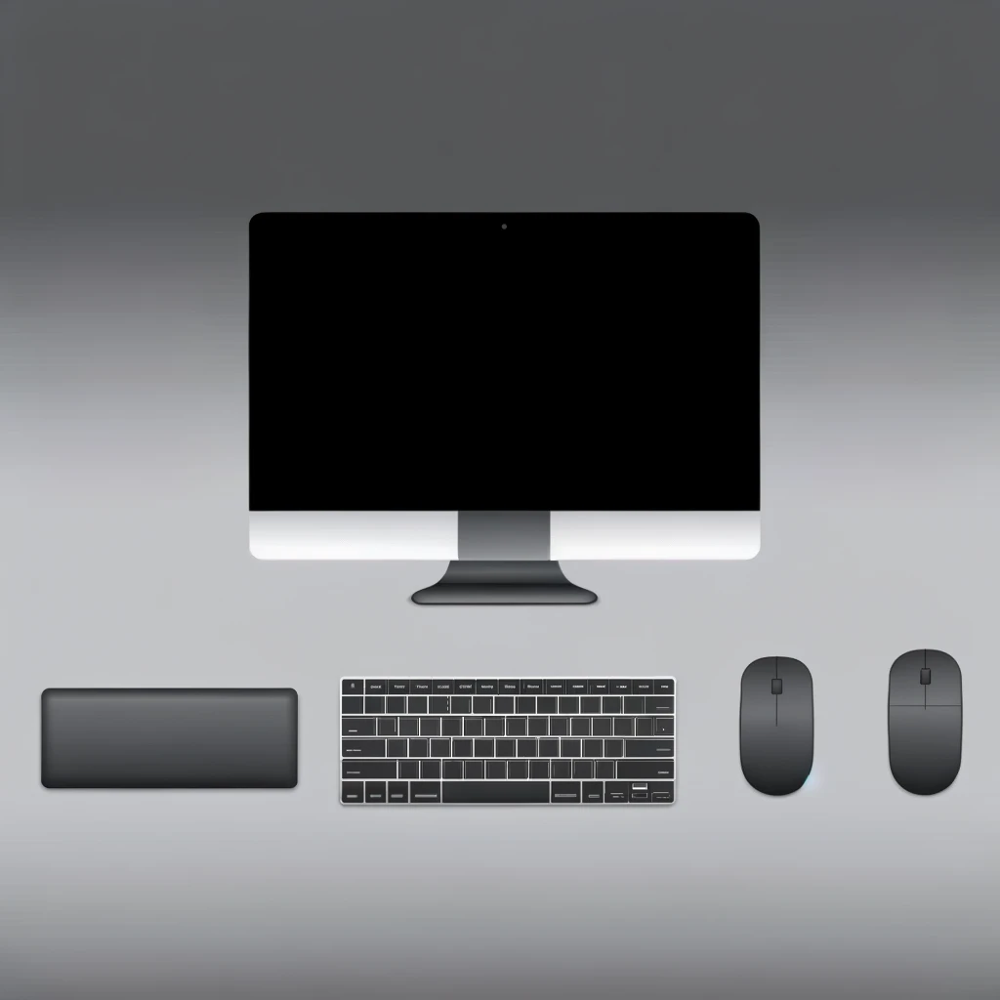
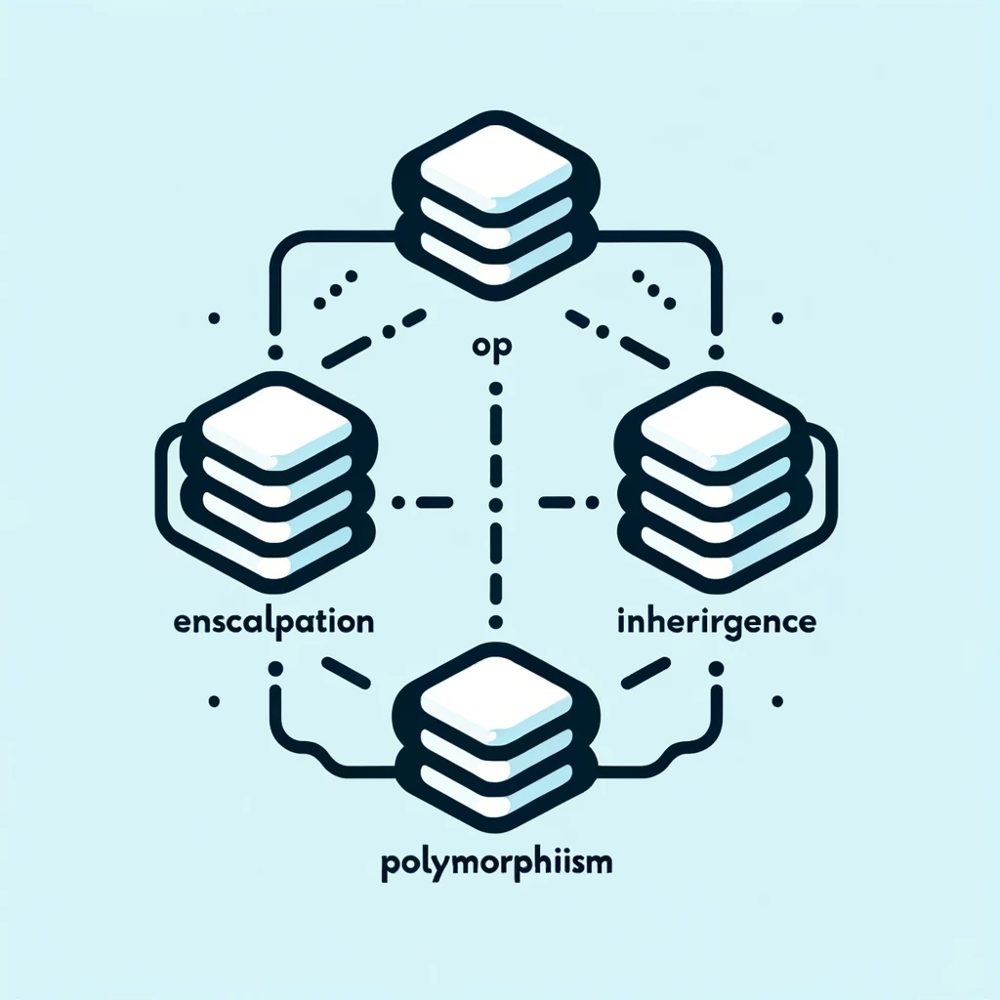
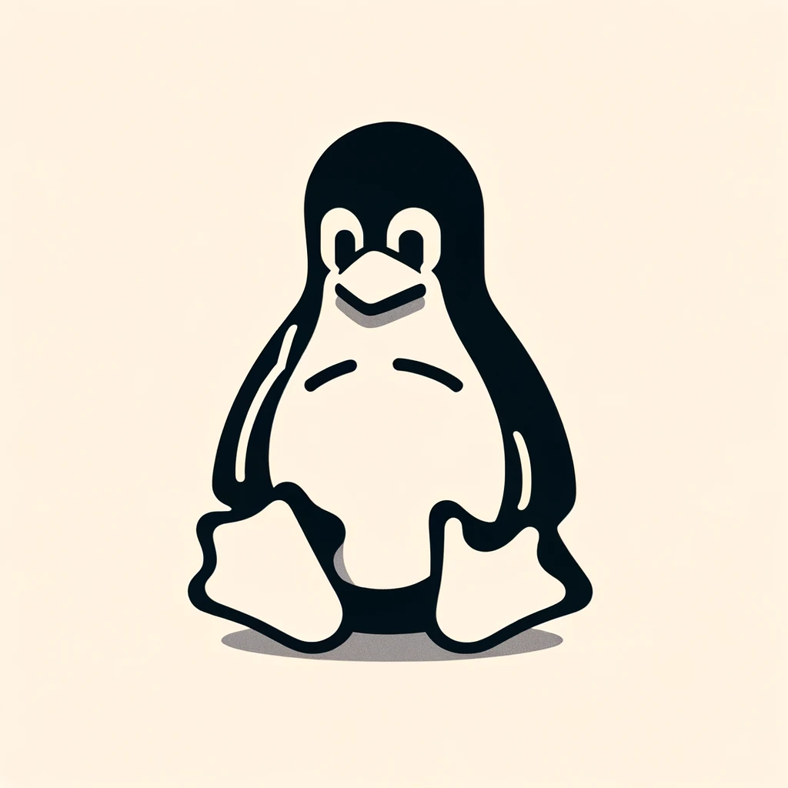

course-number:CST-8116
Introduction to Computer Programming
level 1
Possessing the fundamentals of logic, problem-solving and programming
language structure provides a solid foundation for further study in
the field. Students develop introductory knowledge of computer
programming with emphasis on problem analysis and design, using
algorithms, pseudocode, flowcharts, UML Class Diagrams and testing,
with the Java programming language used as a means to implement
problem solution designs. Through an introduction to the Java
programming language students use sequential structures, selection
structures, repetition structures, variables, constants, methods,
constructors, one-dimensional arrays, object-oriented programming,
classes, objects, abstraction, encapsulation, inputs, outputs, coding
conventions and documentation. Theory is reinforced with application
by means of practical laboratory assessments.

course-number:CST-8116
Computer Essential
level 1
Maintaining a computer, using operating system and productivity
software, and expressing related environmental and sustainability
concerns, is an important part of working with Information Technology.
Students explain computer hardware, and use operating system software
to maintain, utilize, and secure a computer. Students practice the use
of spreadsheet software to solve problems, use formulas, and visualize
data with charts. Students discuss computer hardware and software with
regards to financial and environmental sustainability. Theory is
reinforced with application by means of practical laboratory
assessments, including using virtualization software to install guest
operating systems onto a host computer.

course-number:CST8215
Introduction to Database
level 1
Databases are used to store data and are a core component of many
information technology systems. Students learn the fundamentals of
relational databases design using Entity Relation Diagrams (ERDs), and
use Structured Query Language (SQL) to create, modify and query a
database. Students design and create databases that are maintainable,
secure and adaptable to change in business requirements, using
normalization. Students become familiar with the functions of a
Database Management System (DBMS) and its components in comparison
with legacy systems and alternative information storage mechanisms.
course-number:CST8285
Web Programming
level 2
The World Wide Web (WWW) has become an integrated part of everyday
life. Students develop basic skills of web programming, website design
and implementation. JavaScript, HTML5, and PHP are used to explore
web-based solutions to problems of increasing interactivity and
complexity. Lectures are reinforced by practical assignments that
encourage students to construct and maintain their own websites.

course-number:CST8284
Object Oriented Programming
level 2
Working in the field of information technology as a programmer
requires a firm understanding of Object-Oriented Programming (OOP)
concepts. Students explore object-oriented programming methodology
using the Java programming language. Object oriented concepts, such as
encapsulation, inheritance, abstraction and polymorphism are covered
and reinforced with practical applications. Students explore the
basics of data structures and algorithms as well as basic Graphical
User Interface (GUI) programming.

course-number:CST8102
Operating System Fundamentals
level 2
Operating systems form the backbone of information technology systems
coordinating the interaction between hardware and software. Students
explore the basic concepts and components of Operating Systems (OS),
and how they function and interact with hardware and software
components. Students examine the details of operating system
structures, process management, storage management, installation,
configuration, and administration both in theory and through practical
assignments based on the GNU/Linux operating system. Lab work is
designed to implement the theory by developing skills using the
powerful GNU/Linux command-line tools and utilities.